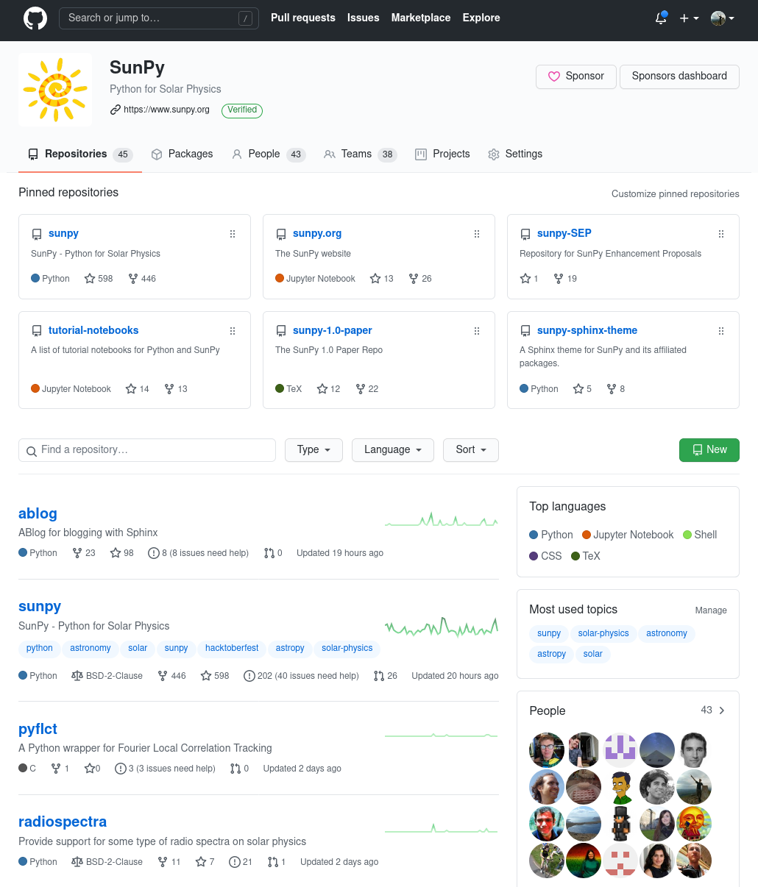
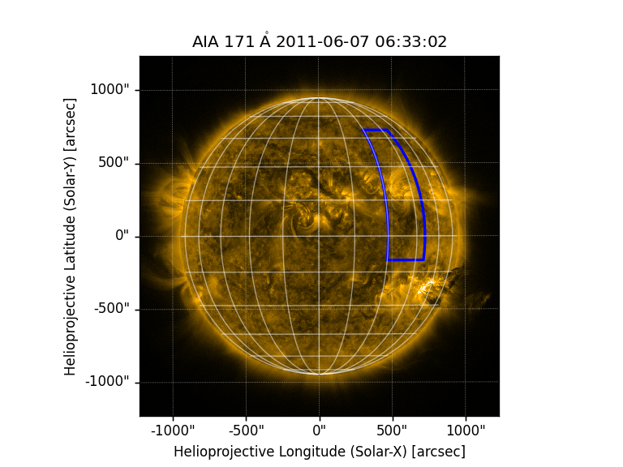
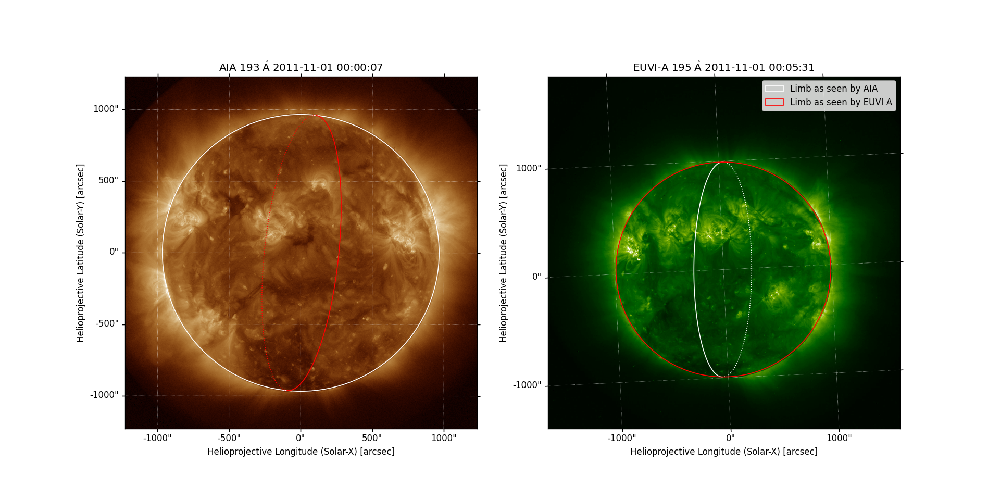

SunPy in 2021: PyHC Spring Meeting Update
Stuart Mumford
https://cadair.github.io/PyHC-2021-SunPy-Talk


Overview
SunPy consists of a core library, a set of affiliated packages and various tools and infrastructure.
- Regular releases of the core package: every 6 months
- 26 contributors to the latest 3.0 release of the core package
- 8 Affiliated Packages

Core Package Features
The core package comprises a core set of tools for solar and heliospheric physics:
Map: 2D image coordinate aware container class.Timeseries: A metadata and unit aware wrapper around Pandas with custom loaders for common data.Fido: A highly extensible and flexible data search and download API for Python.Coordinates: A comprehensive set of extensions to Astropy's coordinates infrastructure for handling coordinates within the heliosphere.
New Features in Map
Many plotting improvements, too many to show here.
aia = sunpy.map.Map(AIA_171_IMAGE)
bottom_left = SkyCoord(30*u.deg, -10*u.deg,
frame=HeliographicStonyhurst, obstime=aia.date)
fig = plt.figure()
ax = plt.subplot(projection=aia)
aia.plot(clip_interval=(1, 99.99)*u.percent)
aia.draw_grid()
aia.draw_quadrangle(bottom_left, width=20*u.deg, height=60*u.deg,
edgecolor='blue', linewidth=2)

New draw_limb functionality
fig = plt.figure(figsize=(16, 8))
ax1 = fig.add_subplot(1, 2, 1, projection=map_aia)
map_aia.plot(axes=ax1)
map_aia.draw_limb(axes=ax1, color='white')
map_euvi.draw_limb(axes=ax1, color='red')
ax2 = fig.add_subplot(1, 2, 2, projection=map_euvi)
map_euvi.plot(axes=ax2)
limb_aia = map_aia.draw_limb(axes=ax2, color='white')
limb_euvi = map_euvi.draw_limb(axes=ax2, color='red')
plt.legend([limb_aia[0], limb_euvi[0]],
['Limb as seen by AIA', 'Limb as seen by EUVI A'])

New Features in Fido
Much improved handling of results
from sunpy.net import Fido, attrs as a
results = Fido.search(a.Time('2010/8/1 03:40', '2010/8/1 3:40:10'),
(a.hek.FL & (a.hek.FL.PeakFlux > 1000)) | a.jsoc.Series('hmi.m_45s')
)
hek_results, jsoc_results = results['hek'], results['jsoc']
hek_results[('event_peaktime', 'obs_instrument', 'fl_peakflux')]
event_peaktime obs_instrument fl_peakflux ------------------- -------------- ----------- 2010-08-01T03:40:37 AIA 1027.64 2010-08-01T03:40:44 AIA 1441.78
jsoc_results
T_REC TELESCOP INSTRUME WAVELNTH CAR_ROT
----------------------- -------- ---------- -------- -------
2010.08.01_03:40:30_TAI SDO/HMI HMI_FRONT2 6173.0 2099
New Features in Coordinates
Velocities
from astropy.coordinates import SkyCoord
from sunpy.coordinates import get_body_heliographic_stonyhurst
mars = SkyCoord(get_body_heliographic_stonyhurst('mars', '2021-01-01',
include_velocity=True))
mars
<SkyCoord (HeliographicStonyhurst: obstime=2021-01-01T00:00:00.000, rsun=695700.0 km): (lon, lat, radius) in (deg, deg, AU)
(-34.46752135, 1.77496469, 1.50936573)
(d_lon, d_lat, d_radius) in (arcsec / s, arcsec / s, km / s)
(-0.02016456, -0.00207286, 2.26395654)>
mars.heliocentricinertial.velocity.norm()
24.357552943376874 km / s
Releases
The SunPy core package is on a 6 month "tick tock" release schedule.
The x.0 releases are supported with bug fixes for a year the x.1 releases for 6 months.
| Release | Scheduled Date | Actual Date |
| v3.1 | 2021-11-05 | |
| v3.0 | 2021-05-07 | |
| v2.1 | 2020-11-06 | 2021-02-22 |
| v2.0 | 2020-05-01 | 2020-07-11 |
| v1.1 | 2019-11-01 | 2020-01-10 |
| v1.0 | 2019-05-03 | 2019-06-01 |
Affiliated Packages
New in 2020 was the formalisation of the SunPy Affiliated Package review system. We currently have 8 affiliated packages listed, two of which are "provisional".
The review system grades on a "traffic light" scale, if not all the criteria are met then the package can be "provisional" while development continues.
Sponsored Packages
Affiliated packages which are maintained by the SunPy Developers are named "Sponsored", these normally live under the SunPy organisation on GitHub and are overseen by the SunPy Lead Developer and the Board.
The sponsored packages are:
- sunpy Core
- ndcube
- drms
- sunraster
- sunkit-image
- pyflct
- radiospecta
Future Priorities
It's always hard to predict the future but somethings we are working on include:
- Releasing ndcube 2.0.
- Basing
Mapon theNDCubeclass. - Reworking how we store and modify metadata in
Map. - Functionality to make regridding of images for visualisation and scientific analysis easier.
- Growing the ecosystem of Affiliated Packages.